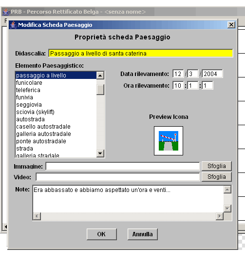
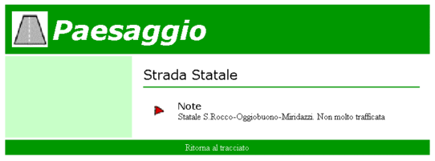
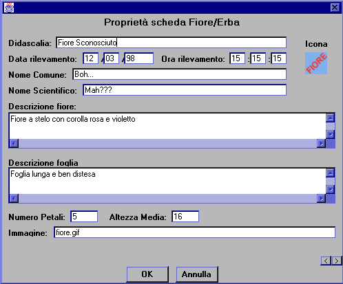
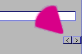
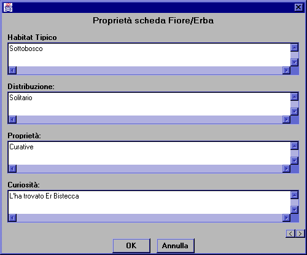
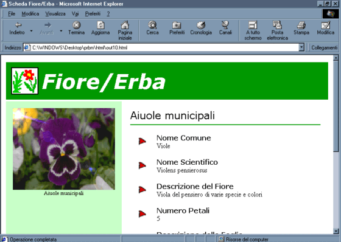

|
Qui trovi l'elenco delle schede degli oggetti che puoi catalogare.
Clicca sulla scheda che ti interessa per vederne la spiegazione.
Scheda Paesaggio
Scheda Fiore/Erba
Scheda Albero
Scheda Ambiente Naturale
Scheda Fauna
Scheda Curiosità
Scheda Fatto di cronaca
Scheda Intervista
Scheda Monumento o Luogo storico
Scheda Meteo
Scheda Paesaggio
Questa è la scheda che riguarda gli elementi paesaggistici:
 |
Titola l'oggetto, scegli quale delle voci si addice di più per assegnargli l'icona e
selezionala, poi scrivi la data e l'ora del rilevamento e le eventuali note. |
Ecco come si presenterà la pagina che verrà creata da questa scheda:

Torna su
Scheda Erba/Fiore
Questa è la scheda che riguarda i Fiori e le Erbe che avete trovato nel vostro
cammino:
|  |
Inserisci i dati richiesti. Per avere maggiori informazioni su come inserire
un'Immagine clicca qui. |
Attenzione! Questa scheda si compone di due pagine!! Per cambiare pagina fai clic sulle
freccine in fondo alla finestra:

|  |
Inserisci qui dei dati più precisi riguardo il fiore o l'erba che hai trovato. |
Ecco come si presenterà la pagina che verrà creata da questa scheda:

Torna su
|